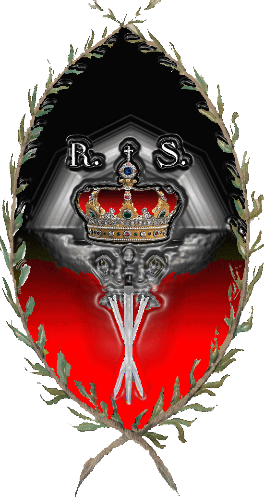

| Übersicht,
Anschläge und Stammtisch (RPG) |
|
Hörd her ihr frein Völka! (23  ) )
|
Wolf ni Volon
  |
Wer soll noch wissen was richtig und gut ist, wenn man zwischen dem Handeln des Urvankonventes und einem Absiebenkonvent keinen Unterschied mehr erkennen kann?
Leider sind hier die anderen Konvente nicht hilfreich in ihrem Tun und in ihren Verlautbarungen.
Ritter Wolf ni Volon,
Vorsteher von Arboretum Gondoria
Zur 23. Stunde am 58.Saatmond im Jahre 445 |
31.01.11 18:22
|
|
Fabius Alagos
  |
Hört her Scherblinge,
auf Rabenklaues Aufruf hin versammelten sich Abenteurer und Wissenschaftler, Helden und Glücksritter, um den Gegenstand den Gration zu begehren scheint, vor diesem zu bergen.
Es gelang uns in weiten Reisen und ermüdenden Suchen in Feuer und Eis mehrere Teile dieses Gegenstandes zu finden.
Ich möchte hier am Anschlagsbrett nur so wenige Details wie möglich nennen. Dringend jedoch ist mein Aufruf uns bei der Suche nach dem 5. und vermutlich letzten Teilstück zu helfen.
Wir haben die Information, dass dieser Gegenstand in der Nähe eines Anlegers liegen soll und dass es sich vermutlich um eine Klinge handelt. Wo sich jener Anleger befindet wissen wir jedoch nicht.
Falls es Euch möglich ist durchsucht die Anleger auf Eurer Heimatinsel oder in der Nähe Eures Wohnortes. Sucht alles Felder auf dem Meer ab, welche in Sichtweise des Anlegers liegen und den Anleger selbst, so als würdet ihr nach Schätzen suchen.
Hinterlasst in der regionalen Taverne Botschaften für Eure Nachbarn, um zu kennzeichnen, welche Anleger bereits durchsucht wurden.
Lasst Euch auf keinen Handel mit den Schergen Grations ein. Sie werden Euch betrügen.
Dem Finder biete ich als Entschädigung für seine Mühen 1 Mio glänzende Goldstücke, sofern er der Erste ist der sich an diesem Anschlagsbrette meldet.
Haltet auch Eure Augen und Ohren nach Rabenklaue offen. Tauben an diesen kehren unverrichteter Dinge zurück. Zeugen berichten von Hilfeschreien auf Kathodos. Mich deucht ihm ist Übles widerfahren.
Weiser Fabius Alagos,
Vorsteher von Hafenbastei Sturmbrecher
Zur 6. Stunde am 89.Saatmond im Jahre 445 |
07.02.11 20:05
|
|
Wolf ni Volon
|
Da helfe ich doch gerne bei der Suche.
Eine Belohnung ist ob des heren Zieles nicht erforderlich. Sollte ich das Glück haben fündig zu werden, werde ich die Annahme einer Belohnung verweigern.
Gleich morgen werde ich mit meiner Suche beginnen.
Ritter Wolf ni Volon,
Vorsteher von Arboretum Gondoria
Zur 8. Stunde am 89.Saatmond im Jahre 445 |
07.02.11 20:31
|
|
| Marea (RIP) |
Wolf solltest du etwas finden, bitte überlasse es mir, dies rufe ich auch allen anderen rechtschaffenden Suchern zu.
Meine Stadt wurde abermals von einer gemeinsamen Aktion der Urvaner mit den Schergen von Olimanier heimgesucht, ich brauche die Gegenstände um etwas unternehmen zu können
Fürstin Marea,
Vorsteherin von Dîn Elenath,
Anführerin der glorreichen Nation "Volk von Alandur",
Ehefrau des ehrenwerten Merrik Mercadur
Zur 20. Stunde am 5.Blumenmond im Jahre 445 |
09.02.11 8:57
|
|
Fabius Alagos
|
Marea Ihr seid gerne eingeladen Euch an der allgemeinen Suche zu beteiligen, solltet Ihr jedoch versuchen andere Sucher für Eure Vorhaben auszunutzen, werden die Schergen Olimaniers Euer kleineres Übel sein.
Weiser Fabius Alagos,
Vorsteher von Hafenbastei Sturmbrecher
Zur 21. Stunde am 5.Blumenmond im Jahre 445 |
09.02.11 9:08
|
|
| Marea (RIP) |
Ich will niemanden ausnutzen, bin täglich auf der Suche.
Mein Übel sind nicht die Schergen Olimaniers, sondern die Verräter, die von Urvan geschickt werden.
Fürstin Marea,
Vorsteherin von Dîn Elenath,
Anführerin der glorreichen Nation "Volk von Alandur",
Ehefrau des ehrenwerten Merrik Mercadur
Zur 22. Stunde am 5.Blumenmond im Jahre 445 |
09.02.11 9:26
|
|
Demogorgon
|
Fabius Alagos, los, versteckt Euch wieder hinter dem Rockzipfle Eures Lehensherren!
Aber lasst hier die Erwachsenen ENtscheidungen treffen, deren Intellekt Euren bei weitem übersteigt!
Fürstin Marea, sollte das Artefakt durch Euch in meine Hände gelangen, so seid Euch gewiss, dass unsere Krieger Euch zukünftig in Frieden lassen werden.
Ebenso biete ich EUch gerne an, Euch Schutz vor den urvanischen oder sonstigen Lichtkriegern zu gewähren - dazu müsstet Ihr Euch lediglich uns anschließen...
Demogorgon |
09.02.11 10:22
|
|
Wolf ni Volon
|
Werter Fabius Alagos,
die werte Fürstin Marea fragt nicht irgend jemand hier um Hilfe, sondern direkt mich, ihren Lehnsmann. Vielleicht weil auch ich von den Untaten dieser gräusslichen und abscheulichen Untoten von Olimanier und den mit ihnen verbündeten Söldner vom Urvankonvent betroffen bin.
In Din Elenath befinden sich ständig eine große Anzahl meiner Leute. Auch in bin oft zugegangen und habe bereits ein zweites Mal persönlich beobachten können, wie diese wohl nur noch offiziel verfeindeten Horden zusammenarbeiten.
Die Verzweiflung in Elenath ist groß. Hilfe wird leider nur auf dem Papier zaghaft angeboten.
Die werte Fürstin greift nach jedem Strohhalm zum Schutze nicht nur ihrer Leute. Die meistgen kümmert es überhaupt nicht.
In und um Elenath wohnen eine Vielzahl von unbescholtenen Siedlern, die ebenfalls durch die ständigen Angriffen leiden müssen.
Wenn der Urvankonvent noch ein wenig an Lichtsiebenglauben in sich verspürt, würde er den Bann gegen die Fürstin ohne wenn und aber aufheben. Aber wer soll daran glauben?
Ich möchte aber auch klarstellen, dass meine Suche nur dem Kampf gegen die Gehörnten gilt.
Ritter Wolf ni Volon,
Vorsteher von Arboretum Gondoria
Zur 13. Stunde am 7.Blumenmond im Jahre 445 |
09.02.11 18:30
|
|
wollium v. glänzenen wolfstern
  |
Ich werde wenn ich etwas finde mit Sicherheit nicht der Fürstin Maera aushändigen. Jeden Tag aufs neue opfere ich meine ganzen Kraftreserven auf der Suche nach den Artefakten und will nicht das sie in irgendeinem Tauschhandel den Absieben in die Hände fallen.
Baron Wollium v. glänzenen Wolfstern,
Vorsteher von Wolfsglut,
Kardinal im Dienste des einzig wahren Glaubens an Tura,
Lichtwolf der Nation
Zur 17. Stunde am 7.Blumenmond im Jahre 445 |
09.02.11 19:21
|
|
Rejäl
 |
Leider musste ich auch beobachten, wie die urvanischen Glaubenskrieger sich mitnichten gegen die Abgesandten Olimanirs wandten.
Vielleicht wäre es an der Zeit für den Konvent, die Glaubenskrieger zurück zu rufen und der Fürstin aus dem Sumpf zu helfen?
Oder glaubt hier noch jemand, dass die Glaubenskrieger hier für eine Wendung zum Besseren sorgen?
Doch zum eigentlichen Thema:
Viele der Teile konnten gefunden werden, doch ein Schlüsselstück fehlt noch.
Möglicherweise hat sich Bendur diese Teile geholt und wacht über sie, aber genaues lässt sich nicht sagen.
Sofern jemand über Rabenklaues Aufenthaltsort bescheid weiß, möge er sich bitte melden - ich werde mich gerne für dienliche Informationen erkenntlich zeigen.
Kardinal Rejäl,
Vorsteher von Majores Morgul,
Kardinal im Dienste des einzig wahren Glaubens an Bendur
Zur 5. Stunde am 8.Blumenmond im Jahre 445 |
09.02.11 22:08
|
|
Fabius Alagos
|
Das von uns gesuchte Teilstück wurde gefunden. Es ist jedoch anzunehmen, dass sich noch weitere Klingen in den Tiefen der Meere befinden.
Ritter Fabius Alagos,
Vorsteher von Hafenbastei Sturmbrecher
Zur 1. Stunde am 17.Blumenmond im Jahre 445 |
11.02.11 23:45
|
|
Fabius Alagos
|
Die Gemeinschaft der Sucher betrauert den Verlust eines ihrer ältesten Mitglieder, Quirinius Quirell.
Er liebte die Magie, auch wenn er nicht viel davon verstand. So verstarb er vermutlich bei dem Versuch den Zauber des Portals auf eigene Kappe zu ergründen.
Mein Beileid an jene, welche er Freunde nannte.
*betrachtet einen Papierflieger in seinen Händen, auf dessen Oberfläche langsam die grün leuchtende Schrift erscheint "Quirinius ist tot - das Forum vernichtet - Treffen zunächst an alter Stelle", dann erhebt sich der Flieger und flattert scheinbar ohne Ziel davon*
Weiser Fabius Alagos,
Vorsteher von Hafenbastei Sturmbrecher
Zur 21. Stunde am 41.Erntemond im Jahre 445 |
10.03.11 18:55
|
|
Chihiro Takeshi
  |
Ich stand dem Bau des Portals schon immer skeptisch gegenüber. Und nun dieses Unglück. Die Sucher sollten noch vorsichtiger sein...
Mein Beileid seinen Freunden und seinen Nationsbrüdern und -schwestern.
Lady Chihiro Takeshi,
Vorsteherin von Cho no Shi,
Anführerin der glorreichen Nation "Cho no shimai"
Zur 6. Stunde am 42.Erntemond im Jahre 445 |
10.03.11 20:51
|
|
Rejäl
|
*Noch völlig erstarrt von der Nachricht steht er da*
Er war ein beeindruckender Magier. Nicht immer mit dem exakt passenden Spruch, aber immer wieder beeindruckend.
Ich werde ihn vermissen, ... er wird uns fehlen.
Kardinal Rejäl,
Vorsteher von Majores Morgul,
Kardinal im Dienste des einzig wahren Glaubens an Bendur
Zur 10. Stunde am 42.Erntemond im Jahre 445 |
10.03.11 21:55
|
|
Wolf ni Volon
|
*traurig schaut*
Ich habe ihn ja nicht sehr lange gekannt und kann aber trotzdem sagen, dass eine Persönlichkeit die Scherbenwelt verlassen hat. Es mußte vielleicht auch auf diese Art passieren, da er die Magie über alles schätzte.
Alles gute Kollege
Ritter Wolf ni Volon,
Vorsteher von Arboretum Gondoria
Zur 11. Stunde am 45.Erntemond im Jahre 445 |
11.03.11 14:46
|
|
| James C. Barbedos (RIP) |
10.04.2011 22:13 Donnerschlag Ein Riss entsteht im Gefüge der Scherbe
Die Wichtel berichtet etwas von einem Riss. Wo befindet sich dieser? Denn ich habe keine Lust mit voller Fahrt in diesen hineinzusegeln...
Baron James C. Barbedos
Zur 8. Stunde am 88.Dunkelfrost im Jahre 445 |
11.04.11 15:08
|
|
Rhapsody Sternenglanz
  |
Die Wichtel berichteten noch mehr:
10.04.2011 22:27 Exitus General Agrotinos wird in die Tiefen des Risses gezogen
10.04.2011 22:13 Donnerschlag Ein Riss entsteht im Gefüge der Scherbe
10.04.2011 22:09 Ritual Unterstützer Grations öffnen ein arkanes Portal
Einige niedere Dämonen sowie einige unserer geschätzten Feindesschar konnten teilweise mit Armeen in den Hain bei Aerlinn eindringen (man mutmaßt, über ein Portal).
Pfalzgräfin Rhapsody Sternenglanz,
Vorsteherin von Eremits Geierhorst
Zur 3. Stunde am 89.Dunkelfrost im Jahre 445 |
11.04.11 19:28
|
|
Rejäl
|
Dann ist es so gekommen, wie wir befürchtet haben.
Die Unterstützer der Minotauren haben es geschafft, eines der Portale zu aktivieren und wollen wohl mit dem Angriff auf eines, wenn nicht das Machtzentrum der Scherbe, ein Signal setzen.
Dieser Angriff scheint den Hain ins Mark getroffen zu haben, anders kann ich mir nicht erklären, dass von dort aus wild mit Kriegserklärungen um sich geworfen wird.
In diesem Zusammenhang wäre es nun sehr wichtig, in Erfahrung zu bringen, wo das Portal steht, von dem aus die Angreifer eingedrungen sind.
Nur dann besteht eine Chance, dem Treiben bald ein Ende zu bereiten.
Kardinal Rejäl,
Vorsteher von Majores Morgul,
Kardinal im Dienste des einzig wahren Glaubens an Bendur
Zur 19. Stunde am 1.Saatmond im Jahre 446 |
12.04.11 10:25
|
|
Wolf ni Volon
|
Ich kann Rejäl nur zustimmen. Dies wäre nur ein Ziel für unser Portal und einen gezielten Angriff.
Ritter Wolf ni Volon,
Vorsteher von Arboretum Gondoria
Zur 10. Stunde am 2.Saatmond im Jahre 446 |
12.04.11 13:50
|
|
| Gandalf (RIP) |
kann man das portal denn zerstöhren?
Sir Gandalf,
Ehemann der reizenden Marianna lo Ilmarin
Zur 11. Stunde am 2.Saatmond im Jahre 446 |
12.04.11 14:02
|
|
Priboi
 |
Müsste im hain irgenwo ein ausgang ersichtlich sein? Oder müsste man den ´ eingang´ zerstören?
Sir Priboi,
Vorsteher von Quo Veheris,
Kardinal im Dienste des einzig wahren Glaubens an Urvan
Zur 14. Stunde am 3.Saatmond im Jahre 446 |
12.04.11 20:24
|
|
| Thallian (RIP) |
Mich wundert, dass die Dämonen den Hain angreifen, sind doch viele Paktierer direkt aus den Reihen des Hainbundes - und machen auch kein Geheimnis daraus... nicht das mir da jetzt jemand Verleumdung unterstellt.
Thallian
Zur 2. Stunde am 4.Saatmond im Jahre 446 |
12.04.11 23:12
|
|
| Gandalf (RIP) |
der "ausgang" war direkt auf der stadt aerlinn und ausser durch die ankunft der feinde nicht zu erkennen!!
wenn dann müsste man den "eingang" finden und zerstören
Sir Gandalf,
Ehemann der reizenden Marianna lo Ilmarin
Zur 4. Stunde am 4.Saatmond im Jahre 446 |
12.04.11 23:34
|
|
Priboi
|
Mir kahm zu ohren, dass der tunnel einmalig benutzt werden kann?
Sir Priboi,
Vorsteher von Quo Veheris,
Kardinal im Dienste des einzig wahren Glaubens an Urvan
Zur 7. Stunde am 4.Saatmond im Jahre 446 |
13.04.11 0:13
|
|
| Gandalf (RIP) |
fragen über fragen schade nur das keiner der "wissenden" eine antwort für uns hat
Sir Gandalf,
Ehemann der reizenden Marianna lo Ilmarin
Zur 12. Stunde am 5.Saatmond im Jahre 446 |
13.04.11 7:09
|
|
Fabius Alagos
|
Unsere Gruppierung, in welcher nach wie vor Mitstreiter Willkommen sind, vermutet, dass Portale über einen kurzen Zeitraum hinweg mehrmals benutzt werden können. Anschließend fallen diese durch die enormen Energien der überlagernden Dimensionen in sich zusammen oder es folgt eine Explosion, welche im Radius von 10 Meilen um das Portal und den Ausgang keinen Halm auf dem anderen lässt.
Das Portal der Verräter konnten wir bislang nicht ausfindig machen. Nach diplomtische Auskünften vermuten wir jedoch, dass es sich auf Long Island dem Stützpunkt der Minotauren befindet.
Würden wir die genauen Koordinaten kennen, könnten wir den Ausgang unseres eigenen Portals dorthin verlagern, um anschließend zu versuchen das Portal der Verräter mit Katapultarmeen zu zerstören. Dies würde allerdings aus logistischen Gründen eine Weile dauern. Es ist daher wahrscheinlich, dass dem Portal der Verräter der Zahn der Zeit vorher zum Verhängnis wird. Zudem würde eine solche Koppelung der Portale möglicherweise für große Unruhe sorgen, da dann ja noch einem weitaus größeren Personenkreis der Zugang zum Hain ermöglicht würde, indem man beide Portale nacheinander durchschreitet.
Unseres Wissens gibt es derzeit keinen Zugang ins Innere von Long Island. Jenes Gasthaus, welches diesen eine gewisse Zeit durch einen Tunnel ermöglichte, wurde schon vor geraumer Zeit von Verräterhand zerstört.
Unsere Gruppierung sieht sich militärisch nicht in der Lage, einen solchen Zugang nach Long Island auf längere Zeit zu sichern. Auch ein direkter Angriff auf die Minotauren, scheidet meiner Meinung nach angesichts der momentanen Scherbenpolitik aus. Möglicherweise wissen die Minotauren sich nicht nur auf dem Schlachtfeld zu behaupten, sondern auch die feinen Fäden der Politik für sich zu nutzen.
Weiser Fabius Alagos,
Vorsteher von Hafenbastei Sturmbrecher
Zur 16. Stunde am 5.Saatmond im Jahre 446 |
13.04.11 7:57
|
|
| Gandalf (RIP) |
ja das gasthaus von arthus wurde leider abgerissen aber vielleicht haben ja die wenigen verbliebenen siedler auf long island noch irgendwo einen geheimen zugang hat da schon einmal jemand nachgefragt?
Sir Gandalf,
Ehemann der reizenden Marianna lo Ilmarin
Zur 21. Stunde am 5.Saatmond im Jahre 446 |
13.04.11 9:19
|
|
Übersicht,
Anschläge und Stammtisch (RPG)
|